OpenGIS Services
@ Delft Software Days 2014
Fedor Baart

Agenda
| 09:00 - 09:15 | Introduction, Fedor Baart |
| 09:15 - 10:30 | PostGIS and Qgis, Frank Keppel |
| 10:30 - 11:00 | |
| 11:00 - 12:30 | Gridded data, Giorgio Santinelli |
| 12:30 - 14:00 | |
| 14:00 - 15:30 | Visualizing with KML, Kees den Heijer |
| 15:30 - 16:00 | |
| 16:00 - 17:30 | Services, Fedor Baart |
| 17:30 - 18:30 |
History
Open Source GIS
1980 Lagrid @ Westervelt
1983 Proj4 @ Evenden
1983 GRASS GIS @ CERL
1994 www
1994 Open Geospatial Consortium
First map
1993 @ Xerox
Mapserver
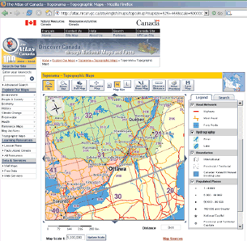1994 @ NASA/ForNet (open source since 1999)
First process
1995 @ Berkeley
Location based services: routing
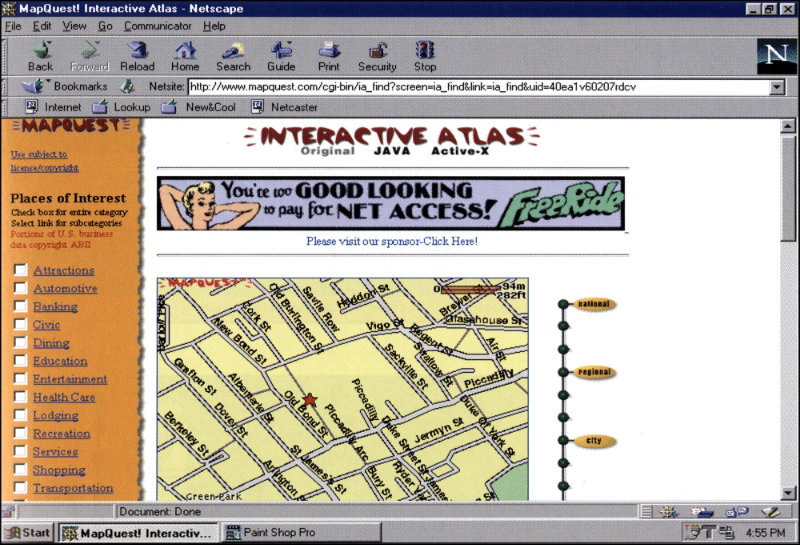
1996 @ Mapquest & Multimap
Spatial querying

2000 @ Geoserver
NASA World Wind

2003 @ NASA
OpenStreetMap
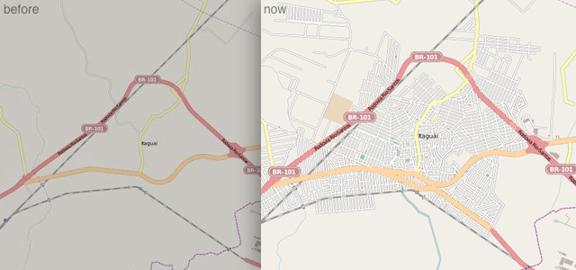
2004 @ Steve Coast
Styling

2005 @ Mapnik
Google Maps
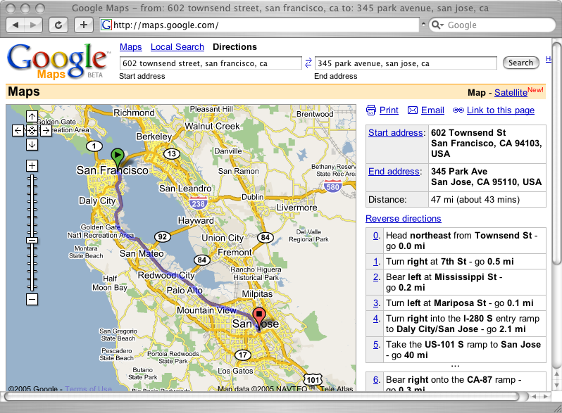
2005 @ Google
Tilecache
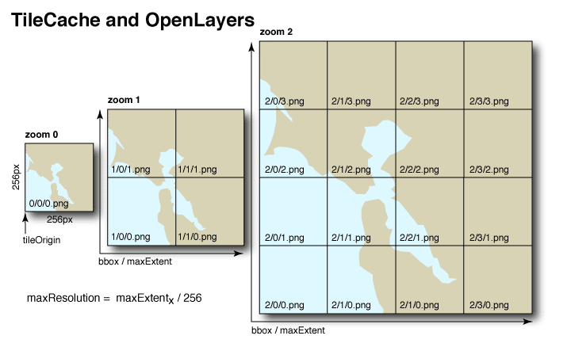
src: renderfast.com
2006 @ Metacarta
Streetview
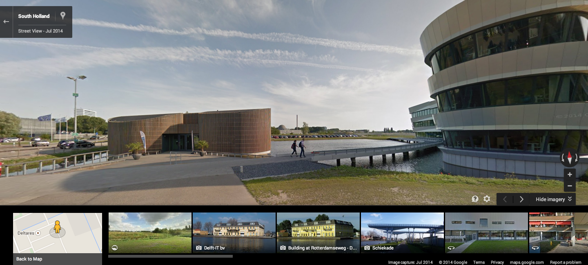
2007 @ Google
Sensors
2007 @ OGC
INSPIRE
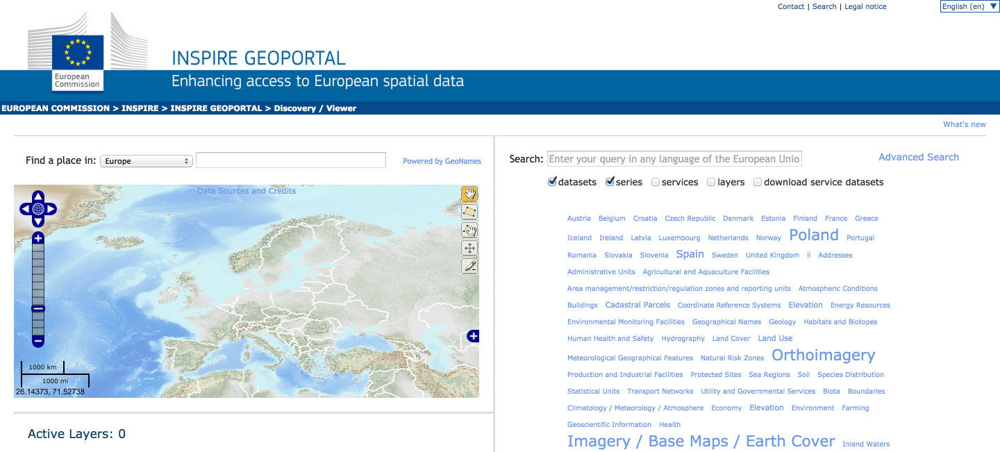
2007 @ EU
Stylesheets
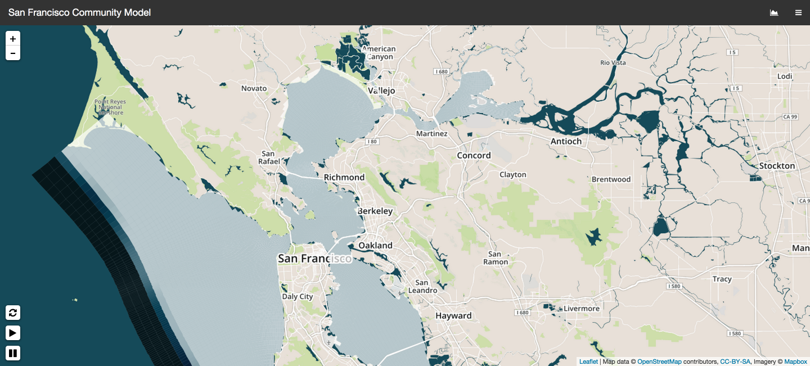
2008 @ Mapnik & Tilemill
Model as a service
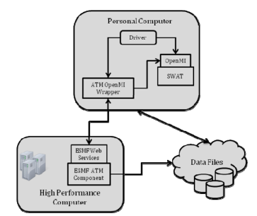
2010 @ ESMF (Saint)
Earth Engine
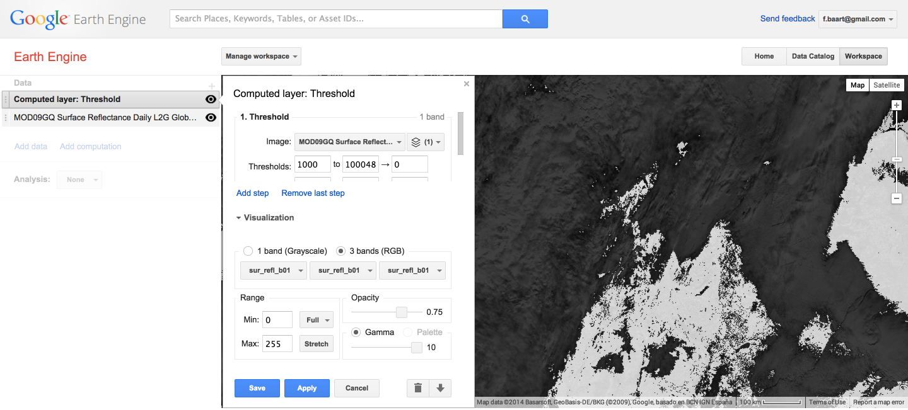
2010 @ Google
Vectors and 3D
transitions2011 @ W3
Vectors and 3D
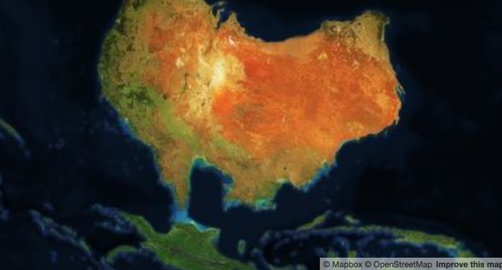2011 @ W3
Animations
2011 @ W3
Animations
2011 @ W3
Map Content Management
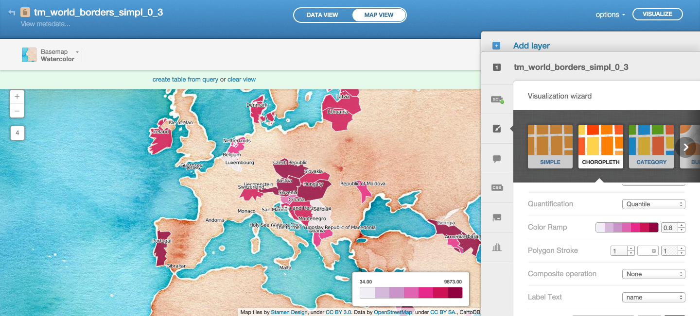
2011 @ CartoDB
Interactive models
2014 @ 3Di
Future
- Sensors
- Push/Messages
- Global processing
- Model setup
OGC Service
Web Map Services
- Get map in bitmap form
- Get information for 1 location
- Custom bounding box
- Map rendered by server on request
- Query by time and elevation
- Coordinate transformation
GetCapabilities
OpenEarth test server
2048
image/png
EPSG:4326
daily averaged meteo parameter.
Implementations
- Geoserver
- Mapserver
- ncWMS
- ADAGUC
GetMap
http://geoport.whoi.edu/thredds/wms/bathy/srtm30plus_v6?
service=WMS&
request=GetMap&
layers=topo&
version=1.3.0&
CRS=epsg:4326&
bbox=50,0,55,10&
width=256&height=256&
styles=&
format=image/png
Example
http://geoport.whoi.edu/thredds/wms/bathy/srtm30plus_v6
Extensions
- COLORSCALERANGE
- LOGSCALE
WMTS
UTFGrid
Challenges
Streaming
Voxels
Vector
Everything is a feature
The question "What is a feature?" leads directly to a philosophical rabbit hole which deposits the unwary questioner in a wonderland from which it is difficult to return.
Nordgren, 2006
Web Feature Service
- Get list of features
- Get table with feature info
- Custom bounding box
- Not rendered
- Coordinate transformation
GetFeature
http://geo.vliz.be/geoserver/wfs?
request=GetFeature&
service=wfs&
typeName=World:worldcities&
bbox=51,2,55,5&
Coverages
Feature that acts as a function to return values from its range for any direct position within its spatiotemporal domain
a grid
Web Coverage Service
- Get a grid file
- Custom bounding box
- Not rendered
- Coordinate transformation
GetCoverage
http://geoport.whoi.edu/thredds/wcs/bathy/srtm30plus_v6?
request=GetCoverage
&version=1.0.0
&service=WCS
&format=geotiff
&coverage=topo
&BBOX=0,50,10,55
Other services
- Sensor Observation Service
- Open Model Interface
- Catalogue Service for the Web
- OPeNDAP
Client libraries
- OGR/GDAL (C,python,R)
- OWSLib (python)
- geotools (java)
Client software
- QGis (desktop)
- uDig (desktop)
- Leaflet (web)
- OpenLayers (web)
Web Processing Services
Processes
- Call a function
- Define input variables/files
- Define output variables/files
- Custom bounding box
- Can be rendered or not
- Start process
- Chain processes
Typical examples
- Spatial operations
- Conversions
- Process @ data
- Simple models
- Facade to complex models
Operations
- GetCapabilities
- DescribeProcess
- Execute
Tide Example
GetCapabilities
OpenEarth WPS server
none
Deltares
tidal_predict
Tidal prediction tool
DescribeProcess
tidal_predict
Tidal prediction tool
...startdate ...
Input/Output
- Title/Abstract
- Description
- Unit
- Default
- Min/max occurance
Types
- Literal (string, number)
- Bounding Box
- Complex (raster, vector)
Execute
tidal_predict
PyWPS Process tidal_predict successfully calculated
Calculated water level for requested locations and date
date,h,lat,lon
2014-11-02 19:50:37,0.3735264572229592,3.0,52.0
Server Implementations
- Zoo
- PyWPS
- Geoserver
- 52North
Tools and languages
- JTS
- GRASS
- Orfeo
- Sextante
- python, R, java
Implementing a process
class Process(WPSProcess):
def __init__(self):
WPSProcess.__init__(self, "tidal_predict",
title="Tidal prediction tool")
def execute(self):
"""execute a tidal prediction"""
date = self.date.getValue()
location = self.location.getValue()
df = openearthtools.physics.tide.predict(location, date=date)
self.tide.setValue(df.to_json())
Client Implementations
- OpenLayers
- OWSLib
- Geotools (unsupported)
Client Example
// OpenLayers example
client = new OpenLayers.WPSClient({
servers: {
opengeo: 'http://demo.opengeo.org/geoserver/wps'
}
});
intersect = client.getProcess('opengeo', 'JTS:intersection');
intersect.configure({
inputs: {
a: features,
b: geometry
},
success: function(outputs) {
map.baseLayer.addFeatures(outputs.result);
}
});
Setting up a server
- Get OSX/linux computer with VirtualBox
- Install ansible
- Install vagrant
- Download OpenEarth stack @ github
- $ vagrant up wps
Missing features
- Stop a process
- REST
- Spatial types (everything is complex)
- Layout hints/classes
- Variable relations
- Push/notifications
Planned in WPS 2
Fall of 2014?
- Pause,Resume,Dismiss
- REST?